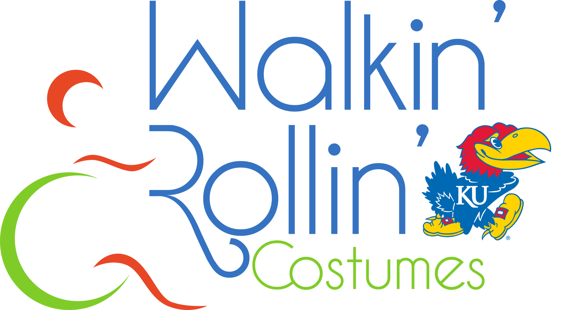
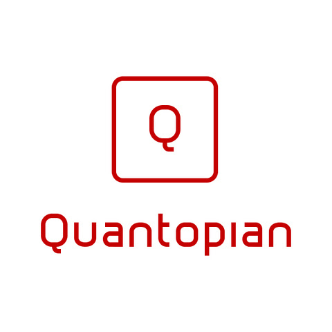

Co-founder of hub(), a student organization at the University of Kansas dedicated to teaching problem-solving skills to
local middle school students through the Python programming language. Leads team in strategy and university-relations.
Working to develop web application to support cloud-based text-editing and student feedback for the program.

Walkin' and Rollin' KU(In Progress)
Co-founder of Walkin' and Rollin' KU, a student group that partners with Walkin' and Rollin', to construct costumes for wheel-chair
bound children. We had an amazing experience working with Walkin' and Rollin' in high school and look forward to continuing the partnership at KU.
If you are interested in getting involved please reach out to me through the email provided at the bottom of the page.

Better Way
Web and Android ridesharing application that connects college students needing
a ride home. Developed at the KU SUA Hackathon using Javascript, HTML/CSS, Firebase, EmailJS,
Google Maps API and GoNative. I worked on the Javascript backend integrating with Firebase and the Google Maps API.

Quantitative Finance Research(In Progress)
Developing and implementing quantitative trading strategies using Quantopian's Python API.
Researching cryptocurrency markets using data from Quandl and testing in Python. Interested in developing more
advanced strategies combining machine learning with advanced mathematics.

Needle
Rotten Tomatoes for Spotify. Upvote and downvote your friends' Spotify playlists
and the songs in them. Web application developed at HackKState using Flask, Python, SQL, and HTML/CSS.
I developed the Python backend using the Spotipy library.